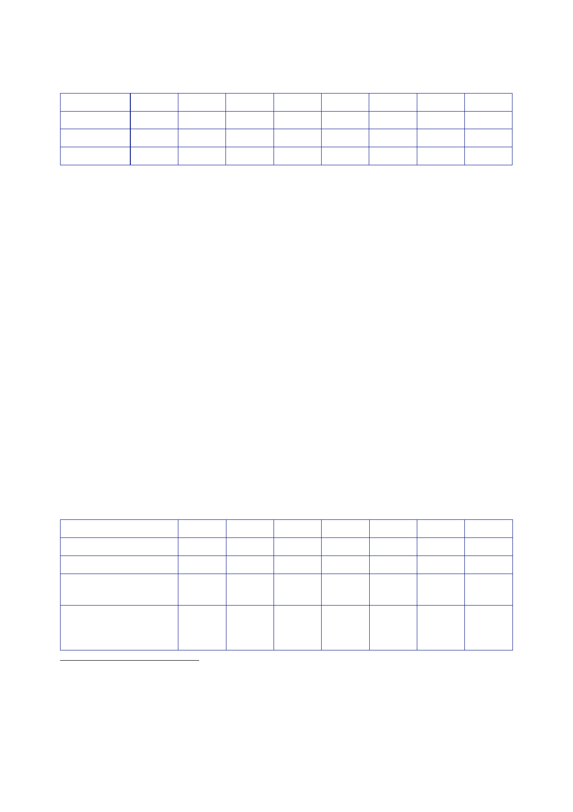

The Report
of the Iraq Inquiry
MOD
FCO
DFID
2002/03
2003/04 2004/05 2005/06 2006/07 2007/08 2008/09
2009/10
28.0 29.0
29.2 29.9 30.2 30.2 30.8 31.1
1.5 1.5 1.6
1.7 1.7 1.6 1.6 1.6
3.9 4.0 4.0
4.9 5.3 5.5 5.7
6.6
23.
The Reserve is
a fund held by the Treasury intended for genuinely
unforeseen
contingencies
which departments cannot manage from their own
resources.21
24.
Sir Nicholas
Macpherson told the Inquiry that the MOD was funded through
its
departmental
settlement to be ready for war, but not to go to
war.22
The costs
of going to
war – the
net additional costs of military operations, or NACMO – were
reclaimed by the
MOD from
the Reserve.
25.
Sir Nicholas
also told the Inquiry that the main call on the Reserve in relation
to Iraq
had been
from the MOD, to pay for NACMO.23
The
Treasury had also accepted “small
claims”
against the Reserve from DFID and the FCO in relation to
expenditure on Iraq
that could
not be met from their own resources or interdepartmental
budgets.
26.
NACMO included
expenditure on Urgent Operational Requirements (UORs).
UORs are
urgent requirements for military equipment that arise due to the
particular
demands of
a specific operational threat and may need to be delivered within a
shorter
period of
time than is normal for defence procurement.24
27.
The table
below shows the size of the Reserve from 2002/03 to 2008/09,
the
percentage
spent on the UK’s intervention in Iraq, and the size of the Special
Reserve.25
The
creation of the Special Reserve in November 2002 is described later
in this Section.
Total
Reserve
Of which
spent on Iraq
% of
Reserve spent on
Iraq
Special
Reserve
(included
in Total
Reserve)
2002/03
2003/04 2004/05 2005/06 2006/07 2007/08 2008/09
2,600 4,100
3,300 3,600 3,000 3,600 4,200
847
1,456 910
958 962.5 1,458 1,381
33 35.5 28
27 32 41
33
1,000 2,500
1,200 1,000 1,100
800
–
21
Statement
Macpherson, 15 January 2010, page 2.
22
Public
hearing, 22 January 2010, page 2.
23
Statement,
15 January 2010, page 2.
24
Minute
Treasury [junior official] to Chief Secretary, 9 January 2007,
‘Increase in the Urgent Operational
Requirements
Envelope’.
25
Statement
Macpherson, 15 January 2010, page 5.
450